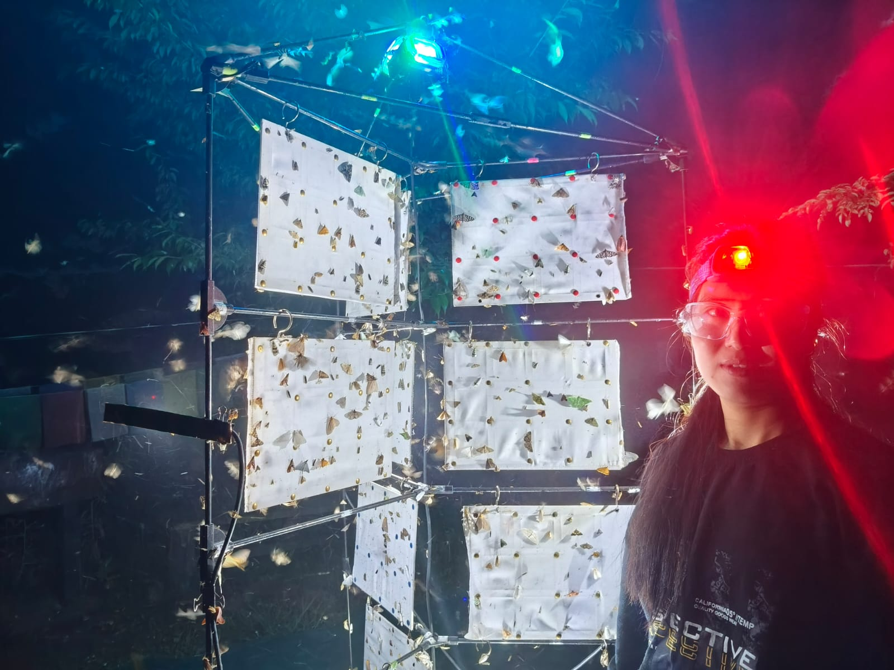
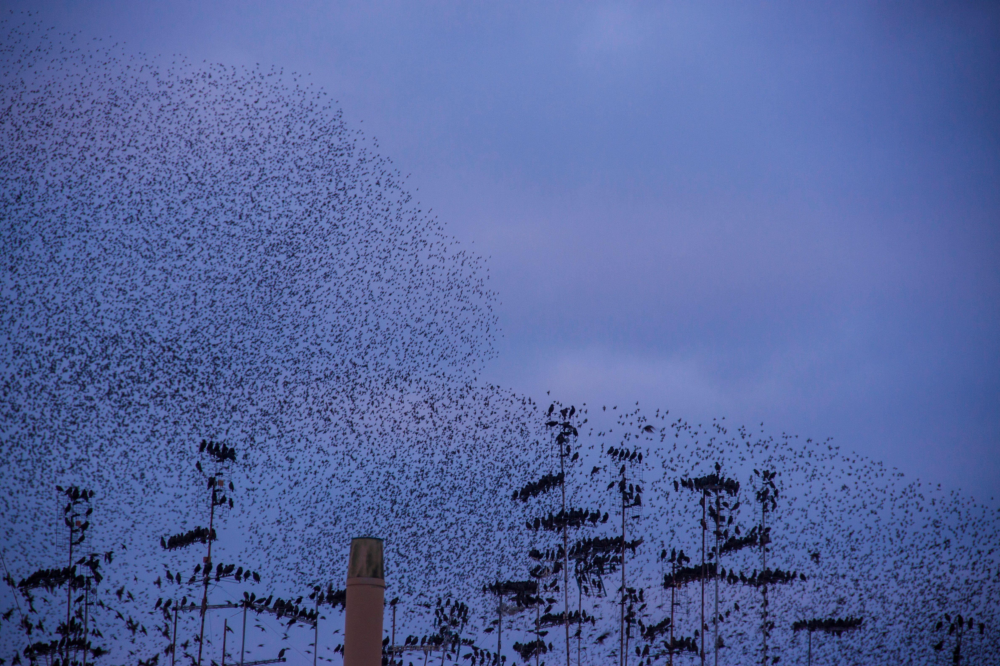
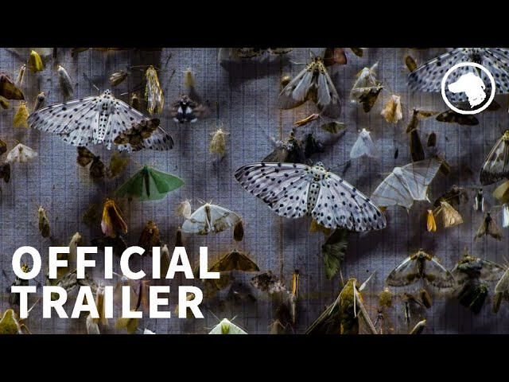
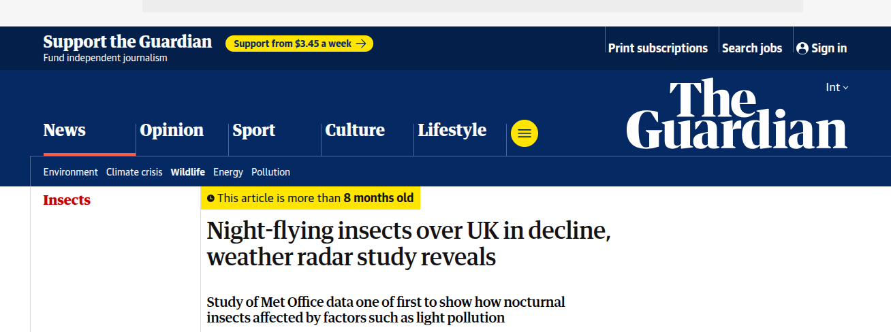

India’s insects: Disappearing in plain sight?
A thoughtful feature by Nandita Jayaraj on India’s insect biodiversity, conservation and the urgent need to pay attention to small lives.
We at MOTH Lab
MOTH Lab explores how insects move, adapt and respond to a changing world. Our group brings together field ecology, remote sensing, weather radar, image processing and artificial intelligence to study ecological patterns across scales: from individuals to communities, and from communities resident within a small forest patch to those migrating and connected across tens of thousands of kilometers.
Explore our research →About MOTH Lab
We are an interdisciplinary research group interested in the hidden biodiversity that moves through forests, mountains, farms and skies.
Our work →


Our research pillars
MOTH Lab studies biodiversity using methods that move between natural history, quantitative ecology, remote sensing and computation.
We study moth diversity, community assembly and ecological strategies across Himalayan landscapes, elevation gradients and changing habitats.
We measure morphology, wing architecture, colour and pattern to understand how insect phenotypes respond to environments and interactions.
We use weather radar and atmospheric data to examine how insects enter, move through and structure the lower atmosphere.
We build computational tools for image processing, feature extraction and scalable biodiversity monitoring.
MOTH Lab in the field
In our group, field ecology begins with close attention to place. Mountain forests, elevational gradients and seasonal transitions offer powerful natural experiments for understanding insect diversity.
We study how moth communities vary across landscapes, how colour and wing traits respond to ecological pressures, and how environmental gradients shape the organisms that often remain invisible in conventional monitoring.
Field-based research →
MOTH Lab in the sky
Weather radar networks can detect more than rain. They also record biological movement: insects, birds and other organisms moving through the atmosphere.
At MOTH Lab, we repurpose radar observations to study aerial insect abundance, nocturnal emergence, seasonal movement and the influence of wind, rain and monsoon dynamics on life in the air.
Radar ecology →


Our approach
We at MOTH Lab are interested in ecological processes that are too small, too numerous, too fast or too high in the atmosphere to observe easily.
Our work connects the fine-scale details of individual organisms — wing geometry, colour, pattern and morphology — with broader patterns of movement, climate, landscapes and biodiversity change.
This means combining fieldwork, imaging, environmental data, radar archives and computational models into one research programme.

MOTH Lab is led by Mansi Mungee, an ecologist working at the intersection of biodiversity science, remote sensing and artificial intelligence.
The group focuses on insects because they are central to ecosystem functioning, yet remain among the least visible components of biodiversity monitoring. Our research asks how new technologies can help reveal their diversity, traits and movement across changing environments.
Across our projects, we aim to build a research culture that is field-based, computationally rigorous, collaborative and visually rich — a lab where moths, maps, radars, images and ecological questions meet.
Latest from MOTH Lab
Media coverage, documentaries, research stories and public writing on insects, biodiversity, radar ecology, technology and conservation.
A thoughtful feature by Nandita Jayaraj on India’s insect biodiversity, conservation and the urgent need to pay attention to small lives.

BioDAR is a team of brilliant, motivated scientists creating a step-change in the way we monitor biodiversity using weather radar and atmospheric data.

Nocturnes is an award-winning documentary by Metamorphosis Film Junction following our field research on Himalayan moths in collaboration with IISER Pune.

Our radar work with team BioDAR used UK Met Office weather radar data to reveal massive aerial insect biomass and concerning declines in night-flying insects.
Collaborate with MOTH Lab
We are always interested in conversations with students, researchers, conservation practitioners, remote sensing scientists and anyone excited by the hidden life of the air.
Get in touch →